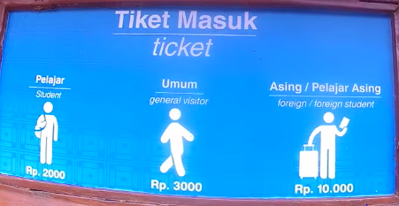

Museum Geologi
Museum Geologi Bandung adalah sebuah museum yang sudah menjadi bangunan bersejarah di kota Bandung, sehingga menarik minat banyak wisatawan. Museum yang dilindungi dan dirawat oleh pemerintah ini dibangun pada tanggal 16 Mei 1928 dan sempat direnovasi dengan dana bantuan dari Jepang sehingga saat ini tetap dalam kondiri baik sebagai tempat wisata yang layak dikunjungi di Bandung. Setelah renovasi, Museum Geologi Bandung dibuka kembali oleh Megawati Soekarnoputri pada tanggal 23 Agustus 2000.
Jika ada yang ingin sesekali berwisata ketempat ini ada info penting nih buat Bapak/Ibu Mas/Mba Kakak/Adik sekalian,
Perlu diketahui jika kita ingin berkunjung ke suatu tempat dimanapun baik mengenai lokasi atau pun jam atau tutupnya karena percuma kan, apabila ketika kita disana tapi ternyata tempatnya sudah tutup dan harus menunggu besok untuk berkunjung. Nah saya informasikan kepada para wisatawan mancanegara atau lokal bahwasanya museum ini buka pada jam 08.00 am dan tutup dijam 04.00 pm pada hari senin,selasa,rabu kamis. Dan ingat pada hari jum'at Museum ini libur, jadi jangan lupa ya dari pada buang-buang ongkos \('_')/ kan lumayan buat jajan. Untuk hari sabtu dan minggu anda bisa berkunjung kesini dengan jadwal buka jam 08.00 am sampai jam 02.00 pm saja jadi lebih sebentar dari hari- hari biasanya
Jadwal Buka dan tutup Museum
Senin s/d Kamis
Buka Dari jam 08.00 pagi - 04.00 sore
Sabtu s/d Minggu
Buka dari jam 08.00 pagi - 02.00 siang
Hari Libur Museum
Jika ingin berkunjung ke museum geologi Bandung anda harus mengingat hari apa anda akan pergi , takutnya nanti perjalanan anda akan sia-sia bersama keluarga
Ingat!!! Museum ini libur pada hari jum'at dan hari-hari libur nasional
Nih ada informasi juga mengenai harga tiket
Koleksi batuan mineral di museum sangat menarik dan beragam.
Ini adalah fosil binatang purba yang berbentuk ikan pada umumnya namun diperkirakan usianya sudah sangat lama.
Ajak orang tercinta anda untuk meneksplore museum Geologi Bandung.

Tulang Belulang Manusia Purba
Museum mengoleksi sisa-sisa peninggalan tengkorak manusia purba yang ditemukan secara tidak sengaja dan dapat menjadi referensi belajar bagi semua golongan.
Untuk siswa dipatok harga Rp2000.0,- , Lokal Rp3000.0,- dan Turis Mancanegara Rp10000.0,-

Fosil Hewan Purba
Selain dari Fosil Trex ada juga beragam Fosil Hewan purba lainya .
Information by wikipedia
Ayo ke Museum.
Rekreasi
Disini selain ada benda-benda purba kala atau batuan ada juga arena interaktif lainya yang berhubungan dengan alam.
supported by Google
Koleksi Batuan Mineral yang unik ada disini.
Museum Geologi Bandung
Solusi berekreasi menambah wawasan dan ilmu pengetahuan bersama keluarga atau orang tercinta.
Informasi didapat di Google